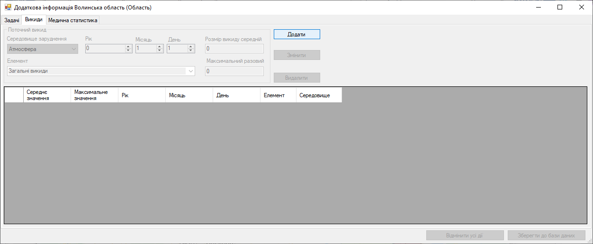
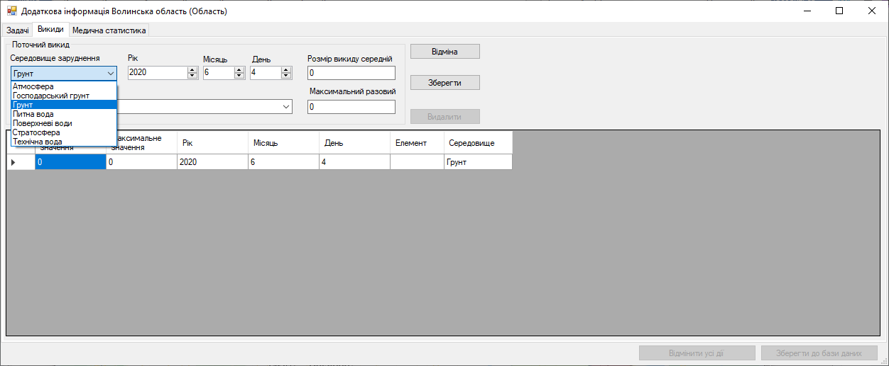
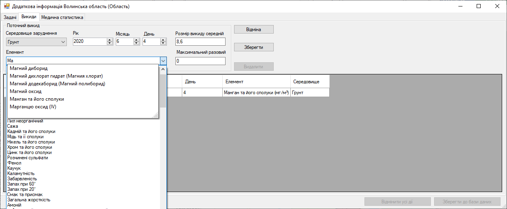

Крок 10. Вкладка «Викиди». Додання інформації
Важливо! Програма автоматично створює в таблиці запис, який редагує експерт змінюючи значення цього рядка у відповідному стовпчику, коли редагує дані, які містяться в компоненті.
Натискає на стрілочку у полі «Середовище забруднення» та обирає запис «Грунт».
Потім вводить дату в поля «Рік», «Місяць» та «День», вона зазначена в джерелі як «Створено», а саме: 4 червня 2020 року.
У полі «Елемент» натискає на стрілочку вниз та обирає елемент «Забарвленість».
Поле «Розмір викиду середній» та «Максимальний разовий» заповнює даними з таблиці джерела даних.
Експерт натискає кнопку «Зберегти».
Важливо! У всіх випадаючих списках з білим фоном є можливість пошуку. Ось як вона працює:
Після збереження даних компоненти для редагування запису таблиці стали недоступні. А кнопка «Зберегти» змінилась на кнопку «Змінити».
Спробуємо додати ще один елемент, наприклад «Кобальт». Заповнюємо так само всі компоненти покроково.
